Resources / slides and guides
Things to use rather than read: interactive guides to books I found useful, and the slides from my talks, as PDFs. Each one links to the post or paper that goes with it. The talks themselves are listed on Events.
Interactive guides 3

Slides 29
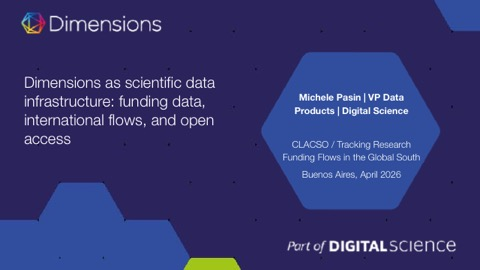
Dimensions as scientific data infrastructure: funding data, international flows, and open access PDF · talk page · blog post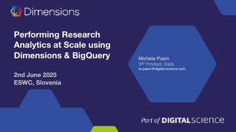
Performing Research Analytics at Scale: the Dimensions Reporting Platform PDF · talk page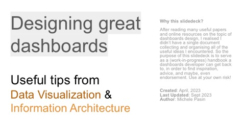
Designing great dashboards: tips from data visualization and information architecture PDF · blog post · SlideShare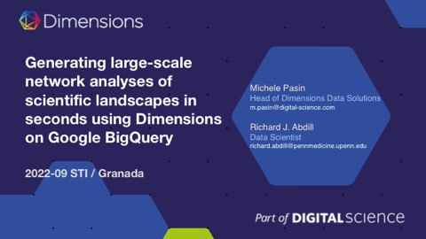
Generating large-scale network analyses of scientific landscapes in seconds using Dimensions on Google BigQuery PDF · paper · SlideShare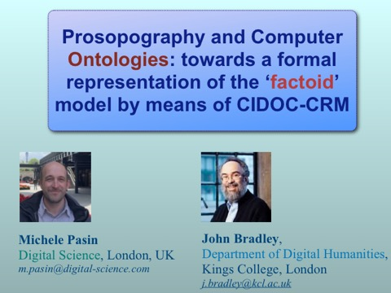
Prosopography and computer ontologies: towards a formal representation of the 'factoid' model by means of CIDOC-CRM PDF · talk page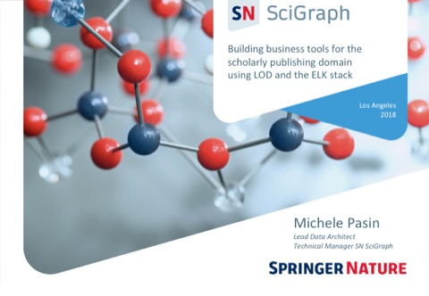
Building business tools for the scholarly publishing domain using LOD and the ELK stack PDF · talk page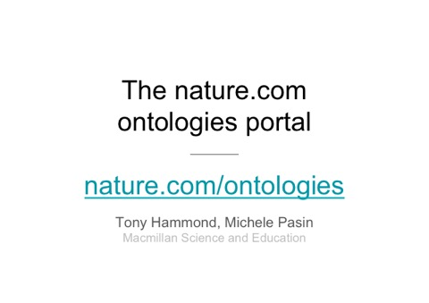
Learning how to become a linked data publisher: the nature.com ontologies portal. PDF · paper · SlideShare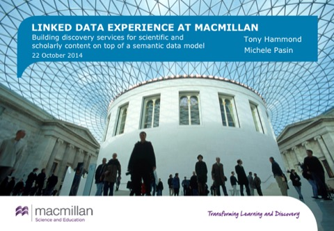
Linked data experience at Macmillan: Building discovery services for scientific and scholarly content on top of a semantic data model PDF · paper · blog post · SlideShare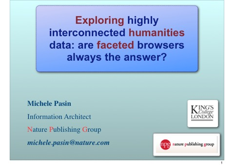
Exploring highly interconnected humanities data: are faceted browsers always the answer? PDF · talk page · blog post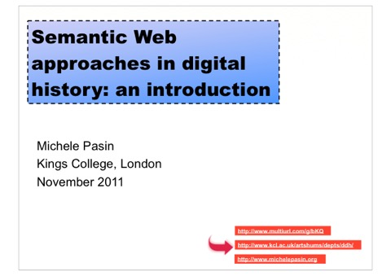
Semantic Web Approaches in Digital History: an Introduction PDF · talk page · SlideShare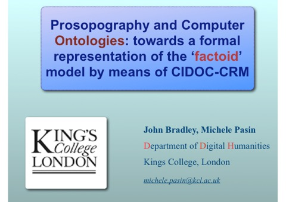
Prosopography and Computer Ontologies: towards a formal representation of the ‘factoid’ model by means of CIDOC-CRM PDF · paper · SlideShare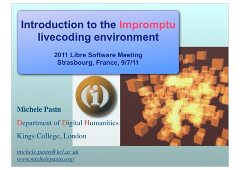
Introduction to the Impromptu livecoding environment PDF · talk page · blog post · SlideShare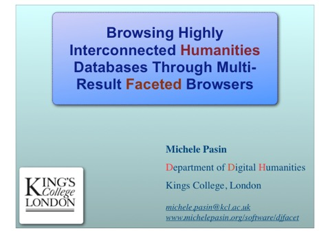
Browsing highly interconnected humanities databases through multi-result faceted browsers PDF · paper · blog post · SlideShare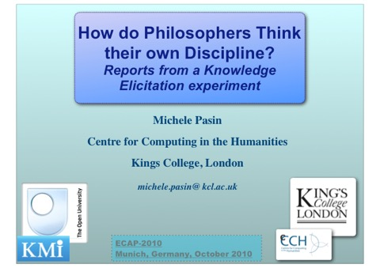
How do philosophers think their own discipline? Reports from a knowledge elicitation experiment PDF · paper · SlideShare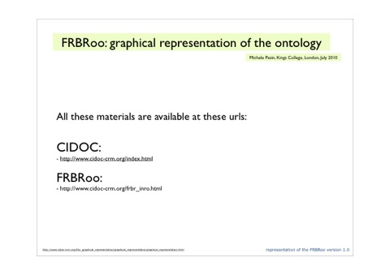
Knowledge Representation seminar, meeting 3: introducing FRBRoo PDF · talk page · blog post · SlideShare
Knowledge Representation seminar, meeting 2: introducing CIDOC-CRM
PDF
· talk page
· blog post
· SlideShare
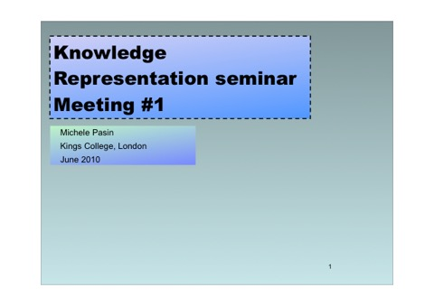
Knowledge Representation seminar, meeting 1: ontologies PDF · talk page · blog post · SlideShare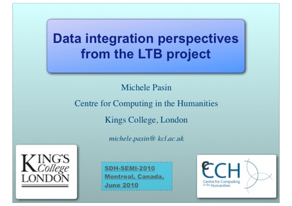
Data integration perspectives from the London Theatres Bibliography project PDF · paper